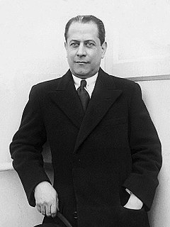

José Raúl Capablanca y Graupera
Хосе Рауль Капабланка (1931)
Дата рождения 19 ноября 1888
Место рождения Гавана, Генерал-
капитанство Куба,
Испанская империя
Дата смерти 8 марта 1942
(53 года)
Место смерти больница Маунт-Синай,
Манхэттен, Нью-Йорк,
США
Страна Куба
Испания
Род деятельности шахматист, 3-й чемпион мира
по шахматам
Награды и премии Чемпионы мира по
шахматам (1921 — 1927)
Хосе́ Рау́ль Капабла́нка-и-Граупе́ра (исп. José Raúl Capablanca y Graupera, 19 ноября 1888, Гавана — 8 марта 1942, Нью-Йорк) — кубинский шахматист, шахматный литератор, дипломат, 3-й чемпион мира по шахматам (завоевал звание в матче с Ласкером в 1921 году, проиграл Алехину в 1927 году), один из сильнейших шахматистов мира в 1910 — 1930-х годах, победитель многих международных турниров. В годы расцвета Капабланка приобрёл славу «шахматного автомата», одинаково виртуозно ведущего партию в миттельшпиле и эндшпиле и практически не допускающего ошибок. В официальных встречах на высоком уровне (с 1909 года) Капабланка проиграл всего 34 партии, а с 1916 по 1924 год оставался непобеждённым.